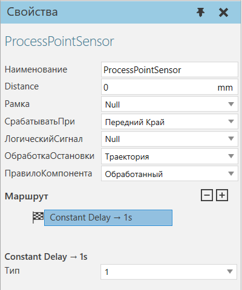
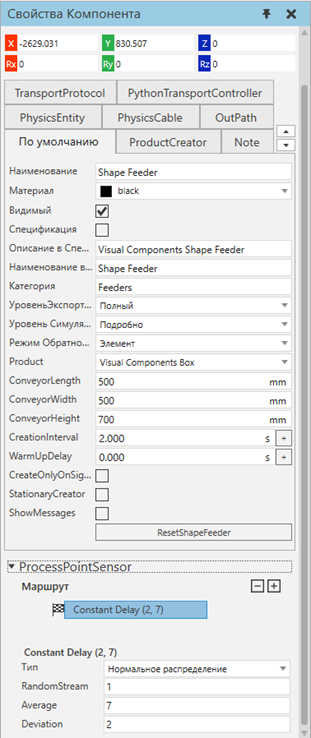

|
Датчик точки процесса (поведение Операция) позволяет обнаруживать компоненты, движущиеся по траектории, и выполнять действия.

Свойства
Название
|
Описание
|
Наименование
|
Определяет наименование датчика.
|
Расстояние
|
Определяет расстояние датчика вдоль подключенного пути.
|
Рамка
|
Определяет объект Frame, указанный как физическое местоположение датчика.
|
СрабатыватьПри
|
Определяет режим датчика для обнаружения компонентов.
Передний край - срабатывает, когда первый край компонента достигает датчика.
Нулевая точка - срабатывает, когда исходная точка компонента достигает датчика.
Задний край - срабатывает, когда последний край компонента достигает датчика.
Ни один - отключает датчик.
|
ЛогическийСигнал
|
Определяет логический сигнал, используемый для подачи сигнала, когда компонент запускает датчик.
|
ОбработкаОстановки
|
Определяет действие, выполняемое при обнаружении датчиком компонента.
Траектория - останавливает путь, к которому прикреплен датчик в 3D-мире.
Компонент - останавливает компонент, обнаруженный датчиком.
|
ПравилоКомпонента
|
Определяет, использует ли датчик свойства обнаруженного компонента или компонента, к которому подключен датчик, для расчета времени обработки. Например, у компонента может быть свое собственное время обработки, определенное в одном из его свойств, или у компонента может быть глобальное свойство для управления временем обработки.
|
Маршрут
Маршрут определяет временную задержку (в секундах) для обработки обнаруженного компонента и может использовать одно или несколько правил, образующих вложенную структуру. Некоторые правила позволяют использовать другие правила для определения временной задержки для компонента. Во всех случаях изменение правила отменяет все его дочерние правила. В крайнем случае, некоторые правила позволяют вам определить временную задержку или правило по умолчанию.
Подсказка: Вы можете отредактировать маршрут датчика точки процесса на панели свойств компонента.

Типы правил
Имя
|
Описание
|
Правило Логической таблицы
|
Время основано на значении True или False.
PropertyName определяет, какое свойство обрабатываемого компонента или компонента-владельца оценивается правилом.
По умолчанию - используется, если значение PropertyName не соответствует ни одному из перечисленных значений в таблице.
|
Правило Целочисленной таблицы
|
Время основано на целочисленном значении.
PropertyName определяет, какое свойство обрабатываемого компонента или компонента-владельца оценивается правилом.
По умолчанию - используется, если значение PropertyName не соответствует ни одному из перечисленных значений в таблице.
|
Нормальное распределение
|
Время рассчитывается с использованием нормального распределения.
Случайный поток - может использоваться для заполнения значения.
В среднем - определяет среднее значение.
Отклонение - определяет стандартное отклонение.
|
<Время>
|
Время - заданное значение.
|
Равномерное распределение
|
Время рассчитывается с использованием равномерного распределения.
Случайный поток - может использоваться для заполнения значения.
Min - определяет минимальное количество времени.
Max - определяет максимальное количество времени.
|
Правило вещественной таблицы
|
Время основано на действительном числовом значении.
PropertyName определяет, какое свойство обрабатываемого компонента или компонента-владельца оценивается правилом.
По умолчанию - используется, если значение PropertyName не соответствует ни одному из перечисленных значений в таблице.
|
Правило строковой таблицы
|
Время основано на строковом значении.
PropertyName - определяет, какое свойство обрабатываемого компонента или компонента-владельца оценивается правилом.
По умолчанию - используется, если значение PropertyName не соответствует ни одному из перечисленных значений в таблице.
|
|